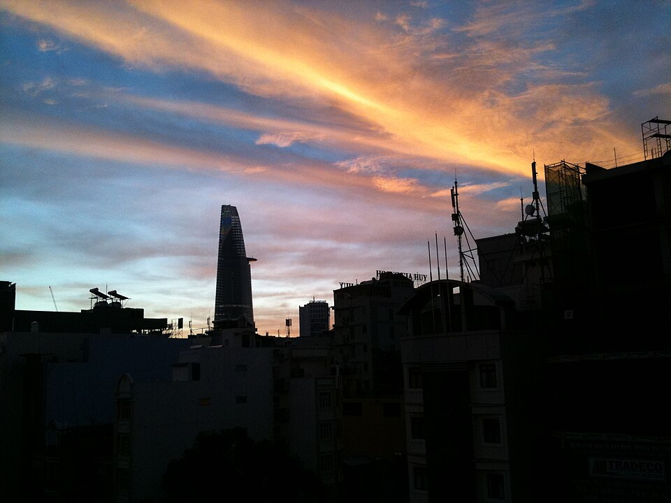

호치민 전경 · 사진: Dragfyre / Wikimedia Commons, CC BY-SA 3.0
ISHCMC(International School Ho Chi Minh City) — 캠퍼스가 나이로 갈리는 학교
1. ISHCMC는 어떤 학교인가
· 설립 — 1993년 호치민 3군(District 3)에서 인터내셔널 그래머 스쿨(International Grammar School)이라는 이름으로 출발한 것으로 알려져 있습니다.
· 위상 — 베트남 최초의 IB 월드스쿨로 알려져 있습니다. 베트남에서 국제학교 역사가 가장 긴 축에 드는 학교입니다.
· 교육과정 — IB 세 과정을 모두 운영하는 IB 컨티뉴엄 학교로 알려져 있습니다. 초등 PYP → 중등 MYP → 고등 DP.
· 캠퍼스 ① — 안푸(An Phu), 투득시(Thu Duc City). 만 2세~11세의 유아·초등 과정.
· 캠퍼스 ② — 타오디엔(Thao Dien). 2018년 문을 연 것으로 알려진 중·고등 캠퍼스로 만 12세~18세를 맡습니다. 두 캠퍼스는 약 5km 떨어져 있는 것으로 알려져 있습니다.
· 구성 — 여러 국적의 학생이 함께 다니는 남녀공학으로 알려져 있습니다.
※ 학비·정원·합격률·재학생 수 등 해마다 바뀌는 수치는 이 글에서 다루지 않습니다. 학교 요강을 직접 확인하세요.
2. 먼저 볼 것 — 캠퍼스가 "학년"이 아니라 "나이"로 갈린다
한국 학교에 익숙한 가정이 가장 헷갈려 하는 지점입니다. 한국은 초등학교 6년, 중학교 3년으로 학교급이 나뉩니다. 미국식 국제학교도 보통 Elementary / Middle / High 로 나뉘지만 한 부지 안에 있는 경우가 많습니다. ISHCMC는 나이로 끊어 캠퍼스 자체가 다릅니다.
| 캠퍼스 | 나이 | IB 과정 | 이 시기의 핵심 |
|---|---|---|---|
| 안푸(An Phu) 유아·초등 | 만 2~11세 | PYP | 탐구·발표·모국어처럼 쓰는 영어 |
| 타오디엔(Thao Dien) 중·고등 | 만 12~18세 | MYP → DP | 기준표 채점 · 장기 과제 · DP 과목 선택 |
※ 나이·학년 대응은 학교 규정과 아이의 생일에 따라 달라질 수 있습니다. 배정은 학교 요강을 확인하세요.
실무적으로 이게 왜 중요하냐면, 만 11세에서 12세로 넘어가는 해에 학교 건물이 바뀌기 때문입니다. 한국으로 치면 초등학교 5~6학년 무렵입니다. 그 해에 아이는 ① 등하교 동선이 바뀌고 ② 평가 방식이 PYP에서 MYP로 바뀝니다. 두 변화가 한 해에 겹칩니다. 형제가 있어 두 캠퍼스에 나뉘어 다니게 되는 가정은 통학 시간표를 먼저 확인하시는 편이 좋습니다.
3. 한국(주재원) 학생이 겪는 어려움
· PYP는 "진도"가 눈에 안 보인다. 이게 한국 가정이 가장 자주 하시는 말씀입니다. PYP는 단원 문제집을 끝내는 방식이 아니라 주제를 정해 탐구하고 결과를 발표하는 방식으로 알려져 있습니다. 그래서 학기 중반에 아이 가방을 열어봐도 채점된 시험지가 없습니다. 진도가 없는 게 아니라 진도의 형태가 다른 것인데, 여기서 불안해서 한국 문제집을 따로 시키다가 아이가 두 가지 방식 사이에서 지치는 경우를 많이 봤습니다.
· 발표와 질문이 곧 평가다. 한국에서 온 아이가 가장 먼저 부딪히는 벽입니다. 답을 알아도 손을 들고 영어로 설명하지 못하면 참여 평가에서 낮게 나옵니다.
· MYP로 넘어가며 기준표가 등장한다. 중등에 올라가면 과목마다 기준(criteria) A·B·C·D로 나뉜 채점표가 붙습니다. 총점이 아니라 항목별로 점수가 나오기 때문에, "어느 항목에서 깎였는지"를 읽을 줄 알아야 다음 과제가 올라갑니다. → 성적표 읽는 법
· 영어로 된 수학. 계산은 되는데 알지브라 용어가 영어이고, 서술형에서 풀이 과정을 영어 문장으로 적어야 단계 점수를 받습니다. 한국에서 수학을 잘하던 아이가 점수가 안 나오는 가장 흔한 이유입니다.
· DP 과목 선택이 갑자기 온다. MYP 마지막 해에 DP 6과목과 HL·SL을 정해야 합니다. 특히 수학 AA와 AI 선택은 되돌리기 어렵습니다. → IB DP 점수 완전정복
4. 그래서 이렇게 준비합니다
📚 초등(PYP) — 문제집이 아니라 "설명하는 영어"
PYP 시기에 한국 문제집으로 진도를 앞세우는 건 권하지 않습니다. 이 시기에 값이 가장 큰 건 읽기 레벨과 자기 생각을 영어 문장으로 말하는 연습입니다. 수업에서 다루는 주제를 가지고 "왜 그렇게 생각했는지"를 영어로 세 문장 말하기를 반복하면, 발표 평가와 나중의 에세이가 같이 올라갑니다. 수학은 한국식으로 앞서 나가는 대신 영어 용어를 붙여 주는 데 쓰는 편이 낫습니다.
🧩 중등(MYP) — 기준표를 놓고 과제를 뜯어본다
MYP에서 성적을 올리는 가장 빠른 길은 채점된 기준표를 같이 읽는 것입니다. "조사는 잘했는데 분석 항목이 낮다"가 보이면, 다음 과제에서는 자료를 더 모으는 대신 자료가 무엇을 뜻하는지 쓰는 문장을 늘리면 됩니다. 이 훈련은 그대로 DP의 IA(내부평가)로 이어집니다.
📖 영어과외 — 읽는 영어에서 쓰는 영어로
읽기 레벨과 과목 어휘를 올린 뒤, 주장 → 근거 → 분석 뼈대를 잡습니다. MYP·DP로 갈수록 인용과 출처 표기가 점수에 직접 들어가므로 이 습관은 일찍 들일수록 좋습니다. (영어 공부법 참고)
📐 수학과외 — 알지브라 용어 + 풀이 서술
알지브라·지오메트리 개념을 한국식 풀이와 영어 용어로 연결하고, 풀이를 영어 문장으로 적는 습관을 들입니다. DP에서 수학 AA·AI를 고를 때 이 서술 실력이 선택지를 넓혀 줍니다. (알지브라 공부법 참고)
🗺️ 편입 시기별 우선순위
· 유아~만 11세(안푸) 편입 — 읽기 레벨과 말하기. 이 시기 영어가 나중의 모든 과목을 결정합니다.
· 만 12~14세(MYP 초반) 편입 — 가장 여유 있는 시기입니다. 기준표 읽는 법과 장기 과제 관리 습관을 잡아두세요.
· MYP 마지막 해 편입 — DP 과목 조합부터 함께 봅니다. 수학 AA·AI 선택이 먼저입니다.
· DP 진행 중 편입 — 남은 기간과 IA 일정을 먼저 세우고 시작하세요. → 입학 준비 총정리
5. 호치민의 강점 — 시차 2시간 화상과외
베트남은 한국과 시차가 2시간입니다. 호치민 기준 오후 5시가 한국의 저녁 7시라, 방과 후에 한국 강사진과 실시간 화상 1:1을 붙이기 좋은 조건입니다. 호치민에는 한국 가정이 많지만, IB 기준표 채점과 영어 에세이 구조를 한국어로 짚어 줄 수 있는 곳은 많지 않습니다. 아이의 실제 과제와 채점된 기준표를 화면에 놓고 "어느 항목에서 깎였는지"부터 보는 방식이 가장 빠릅니다. 베트남 전반 안내는 베트남 국제학교 안내에, 호치민·하노이 지역 사정은 하노이·호치민 학습 관리에 정리해 두었습니다.
정리
ISHCMC는 1993년 출발로 알려진 베트남 최초의 IB 월드스쿨이고, PYP·MYP·DP 세 과정을 모두 운영하는 것으로 알려져 있습니다. 이 학교를 볼 때 기억하실 것은 두 가지입니다. ① 안푸(만 2~11세)와 타오디엔(만 12~18세)으로 나이에 따라 캠퍼스가 갈리므로 그 전환 해를 미리 준비할 것. ② 초등 PYP는 진도가 눈에 안 보이는 것이 정상이므로, 한국 문제집으로 메우려 하기보다 설명하는 영어를 키울 것. 30분 무료 상담으로 우리 아이의 현재 지점을 함께 짚어 보세요.